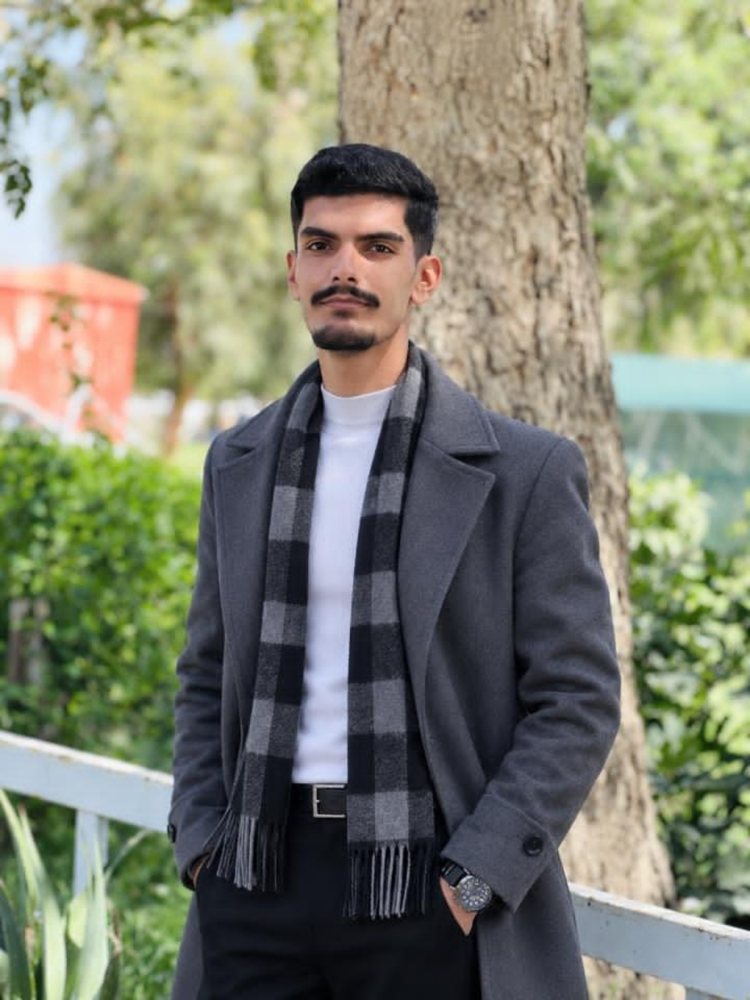

DIGITAL IDENTITY · IRAQ
مُجتبى
رياض.
طالب علوم حاسوب، مهتم بالتقنية والأفكار الإبداعية. أتعلم، أجرّب، وأصنع طريقي في العالم الرقمي — خطوة وراء خطوة.

PROFILE / 01مُجتبى رياض
SCROLL TO EXPLORE
ABOUT
نبذة عني
أتعلم اليوم، لأصنع الغد.
أؤمن أن كل فكرة ممكن تتحول إلى شيء حقيقي إذا بدأنا بخطوة. أعيش رحلة تعلم مستمرة في عالم الحاسوب والتقنية، وأحب أضيف لمستي الخاصة لكل شيء أسويه.
هذا الموقع هو مساحتي الرقمية؛ تعريف بسيط عني، وروابط تجمعني وياكم.
STUDYComputer Science
UNIVERSITYAl-Qadisiyah University
LOCATIONWasit · Iraq
INTERESTTech / Creative
حساباتي
موجود على منصات التواصل.